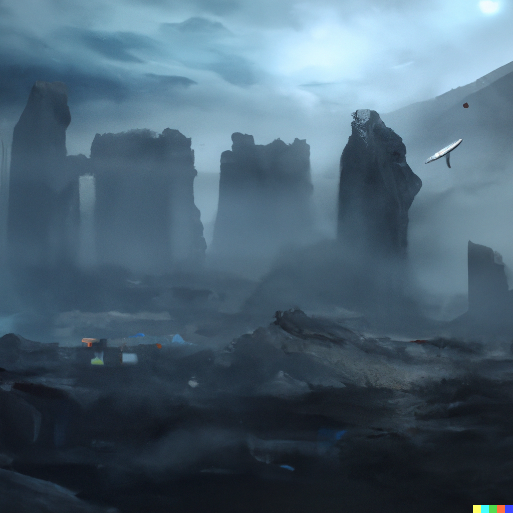
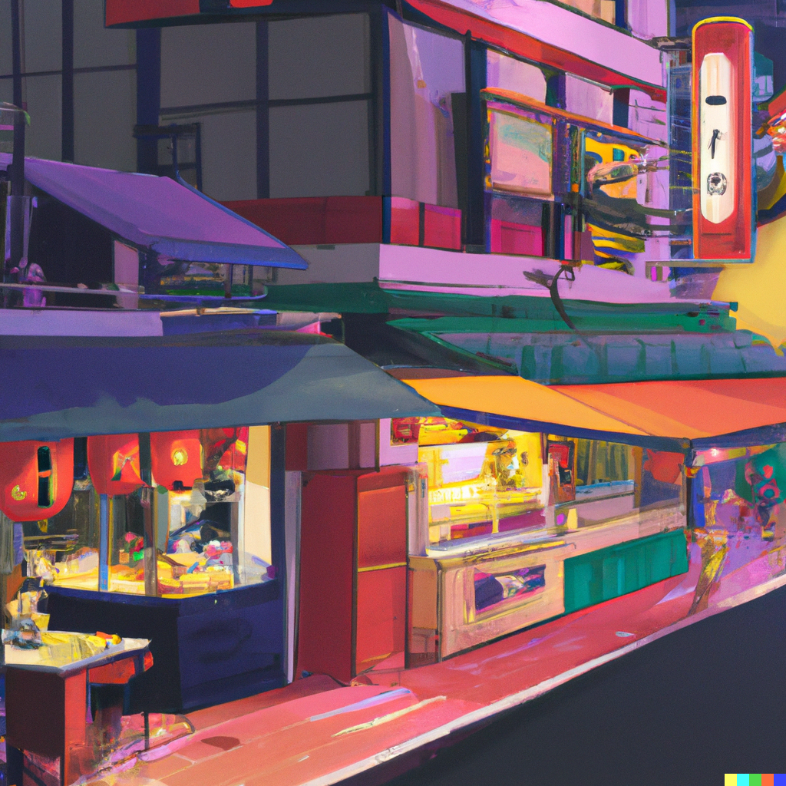
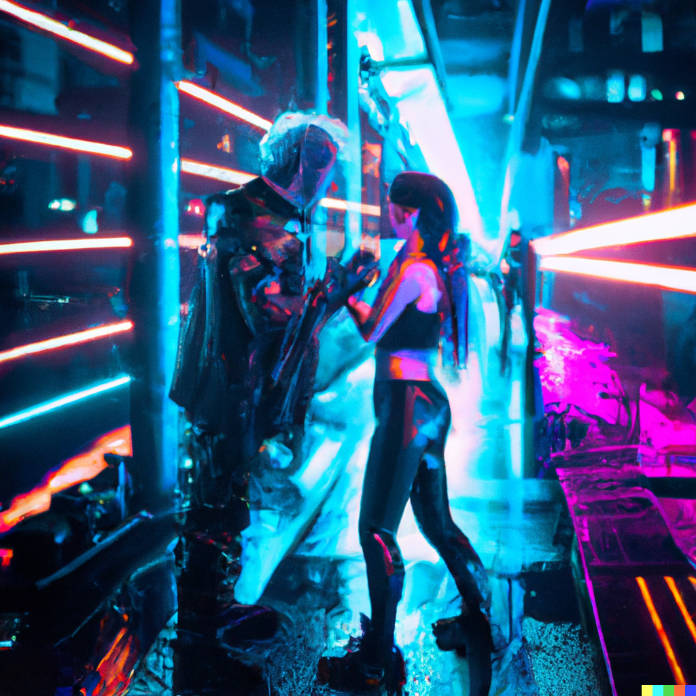

Dall-e
Description: With Dall-e project, I wanted to display dark and gloomy colors for this project and create a goregous scene of a rundown ruins with layers of smokes behind the place along with usage of dark shadows. I was also able to search up and create image of a cypherpunk city of bright neon lights, tall buildings with a dark night setting to contrast the lights.
Applications Used
AI System